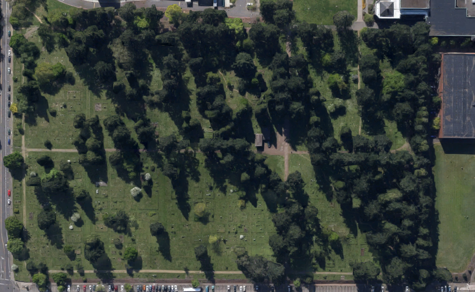
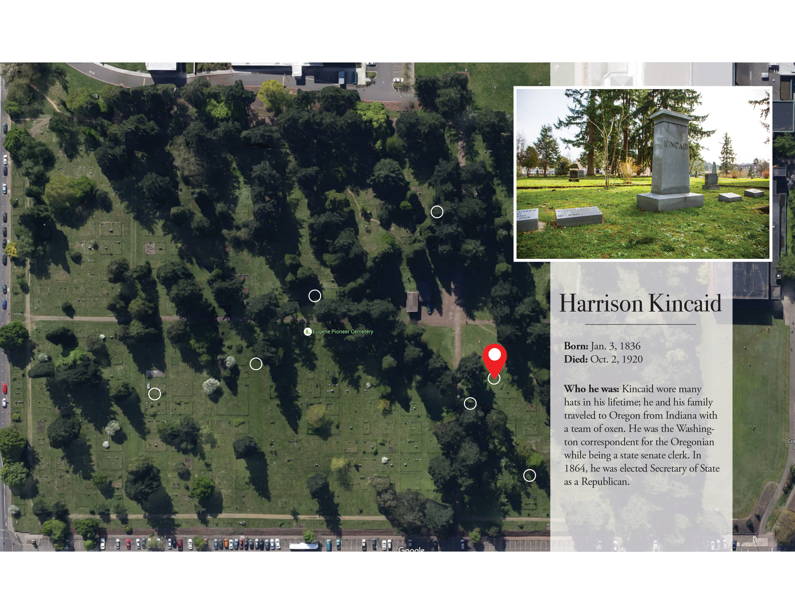
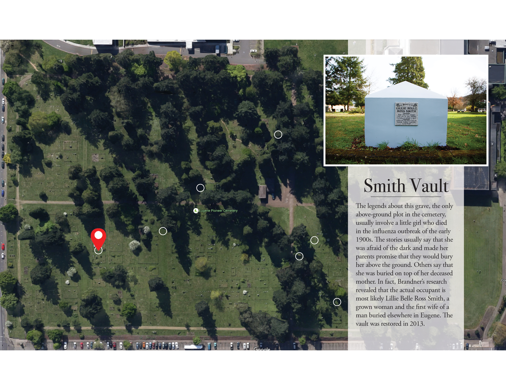
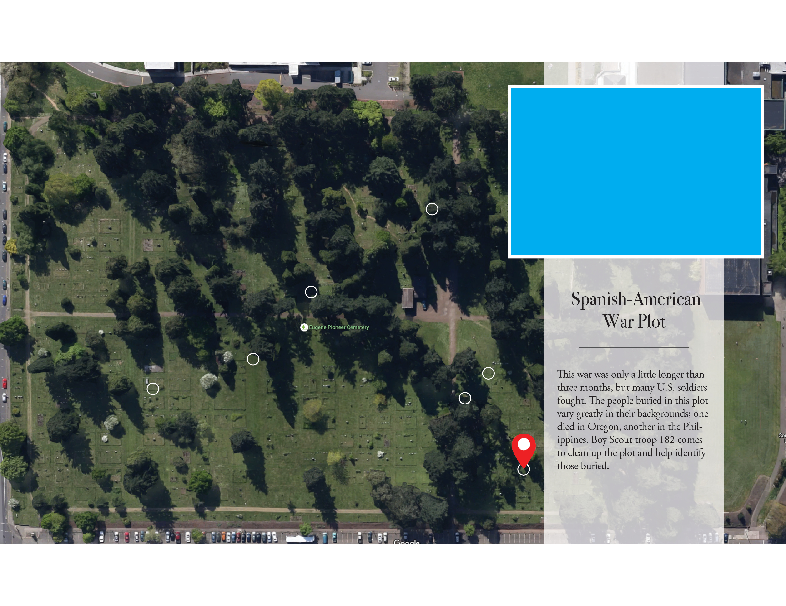
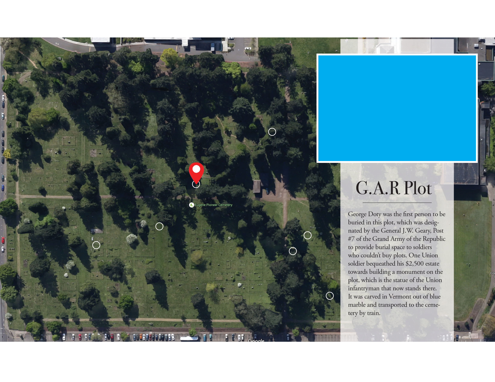
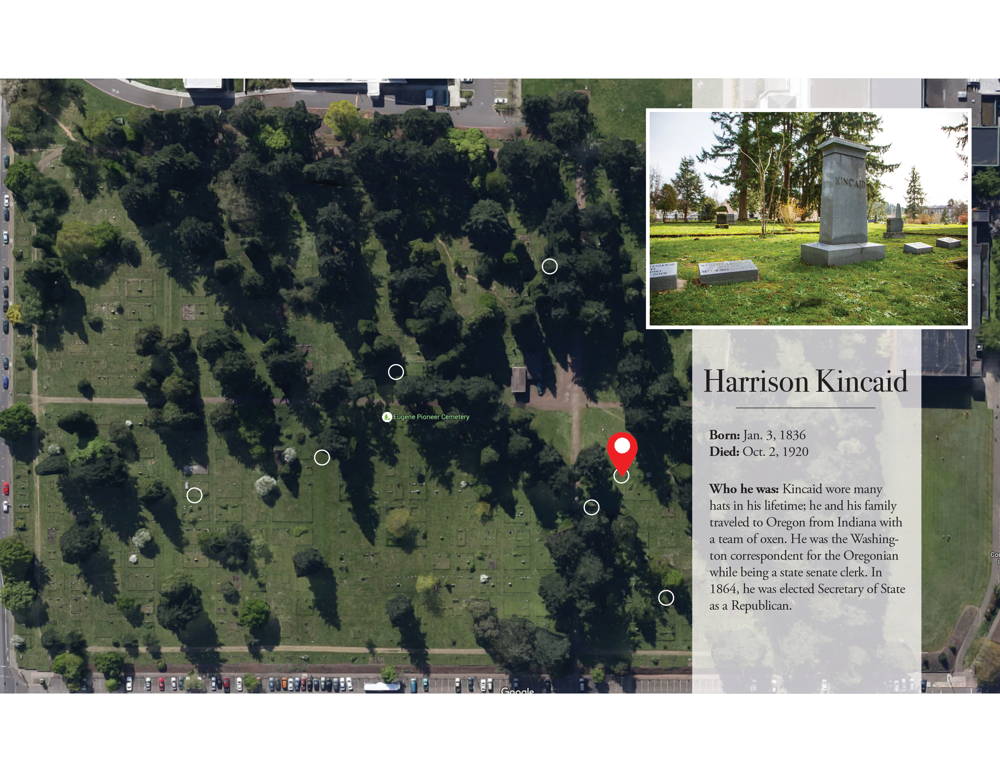
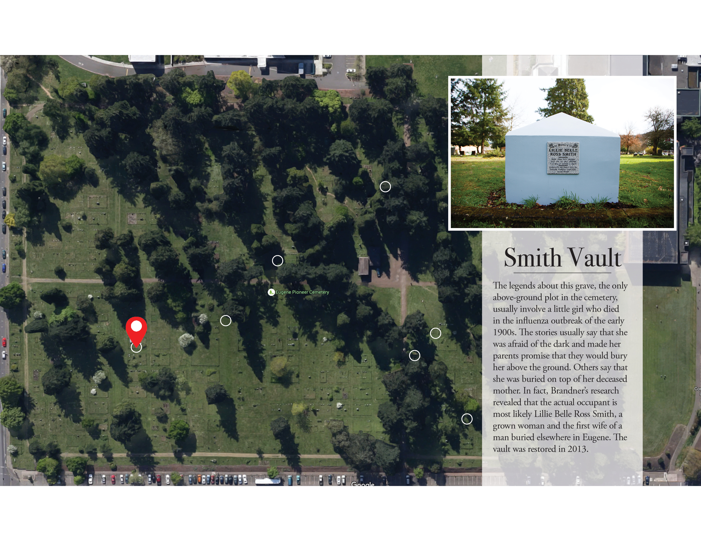
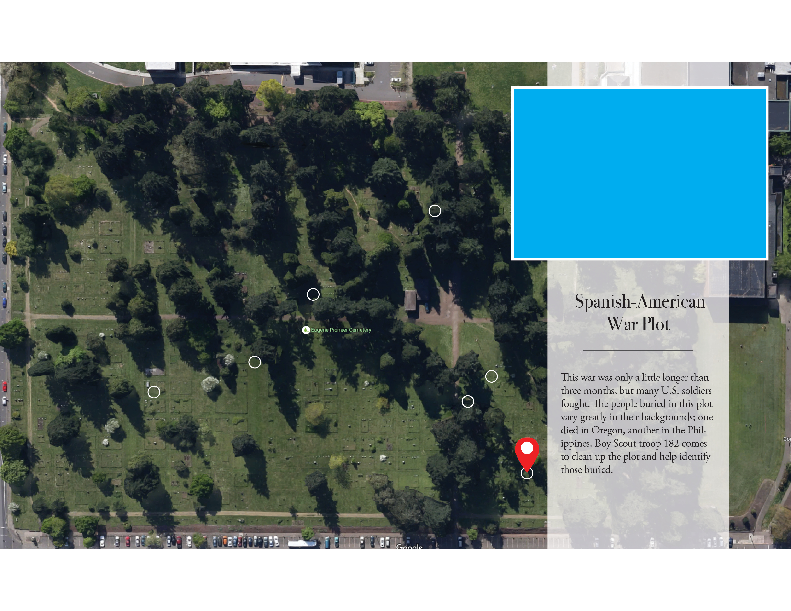
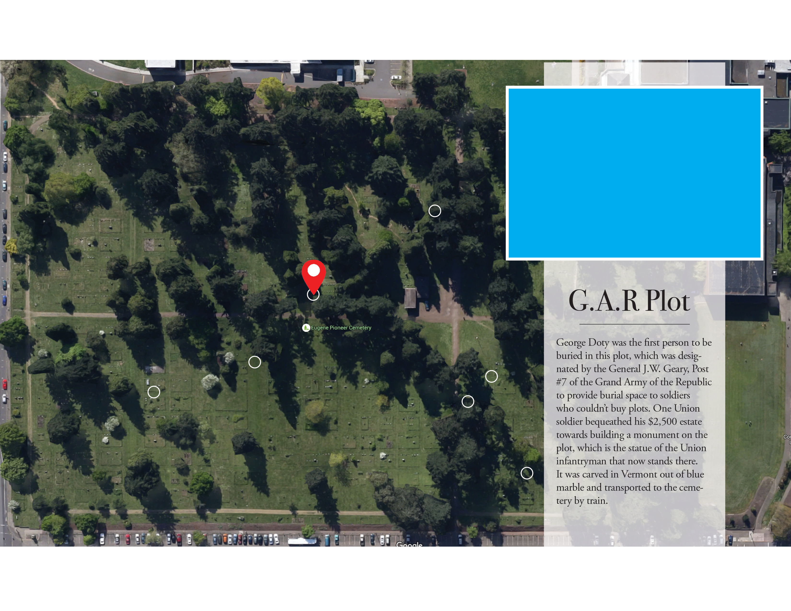

George Dull
59, Cemetery Grounds Keeper
By Kaylee Tornay______
In the midst of a noisy university, George Dull lives in one of the quietest neighborhoods around: surrounded by more than 4,000 graves in the center of the Eugene Pioneer Cemetery. “**Dull quote Every day, dozens of students walk through the cemetery on their way to or from classes, but few ever encounter its elusive groundskeeper. Fewer still stop to talk to him if they meet him. The cemetery, and Dull, coexist beside Mac Court and Knight Library in relative anonymity. Even so, Dull is one of the most visible figures in the network of people who keep the EPC, which has provided residence to the dead since 1872, up and running. Several other men and women, whose roots go deep into the Eugene community, work beyond the sight of students to preserve and protect those buried there, including, for some, their own ancestors. One of them is Quentin Holmes, whose family ties to Eugene and the cemetery precede him by three generations, with the headstones to prove it. Holmes has been the president of the Eugene Pioneer Cemetery Association since 2012; his mother had been active on the board for decades and the biggest catalyst for him joining. Holmes’ great-grandfather Burt Lake moved to Eugene from Minnesota and is buried next to his first wife and sister. When he was growing up, he was frequently sent to the cemetery to clean the plot. “Back then, that was just what people did,” Holmes says. Fewer people embrace this kind of regular maintenance anymore, though, which is where Dull and the EPCA Board of Directors come into play. The cemetery EPC differs from most Eugene cemeteries in several ways, but one major dissimilarity is that it is not what is referred to as a “perpetual care” ceme-FLIP TO LANDSCAPE
 






